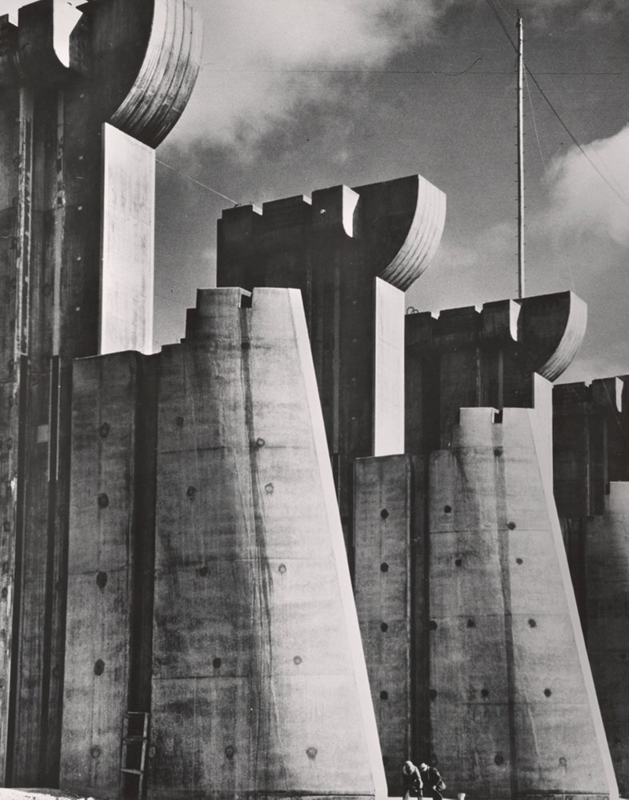

Fort Peck Dam, Montana
Margaret Bourke-White · 1936, printed 1950s · Gelatin silver print · 49.1 × 38.9 cm (paper) · Art Institute of Chicago
In copyright. Look and learn: shown for study, not for download.
This was the cover of the first issue of Life, dated 23 November 1936. Henry Luce, the owner, had told Margaret Bourke-White to watch out for something on a grand scale that might make a cover. According to the United States Army Corps of Engineers it shows not the dam but the spillway, three miles to the east. Bourke-White was thirty-two and had been Luce's staff photographer at Fortune since 1929. The Art Institute of Chicago acquired this print a year after giving her a solo exhibition.